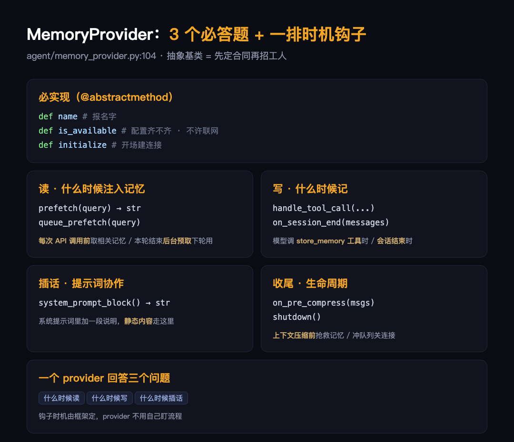

大家好我是郑同学。EP04 讲了 Hermes 通过 ACP 接入桌面客户端，这一篇回到 Hermes 自身，拆记忆系统。
先说一个常见现象：同一个 AI 用了一个月，还是记不住你是谁、上次聊到哪，每次新对话从零开始。原因通常不是模型能力，而是框架没把记忆做出来，或者做成了内置黑盒——好不好用、能不能换，用户说了不算。
Hermes 的做法是把记忆做成插件：plugins/memory/ 目录下有 mem0、honcho、hindsight、supermemory、holographic、byterover、openviking、retaindb 8 个可替换的实现（provider，记忆的提供方），默认方案是 MEMORY.md 和 USER.md 两个纯文本文件。这篇讲清三件事：接口长什么样、实现从哪来、为什么默认是两个文本文件。

● ● ●
所有实现都继承同一个抽象基类（Python 里叫 ABC，Abstract Base Class）MemoryProvider，位置在 agent/memory_provider.py:104。子类必须实现三个方法：
# 报名字：这个实现叫什么
def name(self) -> str: ...
# 检查配置齐不齐、依赖装没装，只查本地，不发网络请求
def is_available(self) -> bool: ...
# 建连接、建表这类重活，留到这里做
def initialize(self, session_id: str, **kwargs) -> None: ...
is_available 在 agent 启动时被调用。如果允许它联网探测，每个候选 provider 探一次，开机就卡住了。所以约定：它只查本地状态，真正的初始化留给 initialize。
三个必答之外是一排可选钩子，每个对应一个明确时机，子类按需实现，不写就空着：
# 在系统提示词里加一段说明（:157）
def system_prompt_block(self) -> str: ...
# 每次 API 调用前，取相关记忆注入上下文（:166）
def prefetch(self, query: str, ...) -> str: ...
# 本轮结束后台预取，供下轮使用（:180）
def queue_prefetch(self, query: str, ...) -> None: ...
# 给模型注册记忆工具，比如 store_memory（:220）
def get_tool_schemas(self) -> list: ...
# 模型调用工具时真正干活（:229）
def handle_tool_call(self, tool_name, args) -> str: ...
# 会话结束钩子（:251）
def on_session_end(self, messages) -> None: ...
# 上下文压缩前的抢救钩子（:305）
def on_pre_compress(self, messages) -> str: ...
# 收尾：清队列、关连接（:237）
def shutdown(self) -> None: ...
一个记忆实现做的事归成三类：什么时候读（prefetch）、什么时候写（handle_tool_call、on_session_end）、什么时候往系统提示词里加说明（system_prompt_block）。时机全由框架定好，实现方不用自己起线程盯流程，这是接口带来的直接好处。
接口定了，实现从哪来。
● ● ●
plugins/memory/\_\_init\_\_.py 的头注释列出四个发现来源：
# 1. 出厂自带：plugins/memory/<name>/
# 2. 用户安装：$HERMES_HOME/plugins/<name>/
# 3. 项目本地：./.hermes/plugins/（需 env 开启）
# 4. pip 安装：entry points
一般插件体系的惯例是后装的覆盖先装的，这里反过来：出厂自带 > 用户安装 > 项目本地 > pip。注释给了理由：记忆 provider 按名字激活，往工作目录丢一个同名目录就能盖掉出厂实现，等于可以悄悄替换 agent 的记忆。所以注释把改动这个顺序定性为破坏性变更，不是可以随手清理的代码。
另一个限制：config.yaml 的 memory.provider 是单选，同时只能激活一个。
四个来源里一个第三方都没配时，走的就是默认方案。
● ● ●
默认记忆是 MEMORY.md（agent 的笔记）和 USER.md（用户画像），加载逻辑在 agent_init.py:1740：
# 出厂默认：纯文件记忆
if agent._memory_enabled or agent._user_profile_enabled:
from tools.memory_tool import MemoryStore
agent._memory_store = MemoryStore(
# MEMORY.md 上限 2200 字符
memory_char_limit=mem_config.get("memory_char_limit", 2200),
# USER.md 上限 1375 字符
user_char_limit=mem_config.get("user_char_limit", 1375),
)
agent._memory_store.load_from_disk()
注意 2200 和 1375 这两个数字。这份内容每次会话都会注入提示词，不设上限就会一直膨胀，每轮对话的成本跟着涨。上限的作用是逼着定期删掉过时内容。
默认选纯文本、不选向量数据库，理由有三：零依赖、可读可手改、git 能版本化。还有一层：第三方 provider 再强，也不该默认把用户数据交出去——要用可以，框架不替用户做这个决定。
● ● ●
| provider | 路线 |
|---|---|
| mem0 | 托管记忆平台，检索增强 |
| honcho | 用户建模引擎 |
| hindsight | 时序回忆 |
| supermemory / holographic | 多模态方向 |
| byterover / openviking | 去中心化方案 |
| retaindb | 本地向量库 |
托管平台、用户建模、时序、多模态、去中心化、本地向量，8 家路线不同，实现的是同一个接口。这和 EP01 讲的前端接入是同一个思路：框架定接口，换不换、换成什么，留给用户。
自己写一个，代码量比想象中少。
● ● ●
class MyProvider(MemoryProvider):
@property
def name(self):
return "my"
# 只查配置，不发网络请求
def is_available(self):
return bool(os.environ.get("MY_API_KEY"))
# 到这里才建连接
def initialize(self, session_id, **kwargs):
self.client = MyClient(...)
# 每次 API 调用前注入相关记忆
def prefetch(self, query, *, session_id=""):
return self.client.search(query)
# 模型调用 store_memory 工具时写入
def handle_tool_call(self, tool_name, args, **kwargs):
if tool_name == "store_memory":
self.client.write(args["content"])
return "stored"
raise NotImplementedError(tool_name)
放进 $HERMES_HOME/plugins/my/，config.yaml 写 memory.provider: my，激活完成。两个坑：一是 agent_context 不是 "primary" 时（cron 任务、子 agent）要跳过写入，ABC 的文档字符串专门警告过，cron 的系统提示词会污染用户画像；二是 is_available 里别做慢操作，agent 启动等不起。
● ● ●
| 层 | 机制 |
|---|---|
| 接口 | MemoryProvider ABC：3 个必答方法 + 时机钩子 |
| 发现 | 四来源扫描；出厂优先，防同名替换 |
| 默认 | MEMORY.md/USER.md 纯文本，带字符上限 |
| 生态 | 8 个 provider 单选激活，接口统一随时可换 |
下一篇 EP06 讲技能系统：skills 目录里的文件怎么被按需加载进提示词，加载机制和记忆的钩子有什么不同。
素材：agent/memory_provider.py（ABC 全接口）、plugins/memory/\_\_init\_\_.py（发现机制）、agent/agent_init.py:1740（默认记忆加载）、plugins/memory/ 8 个 provider 目录，全部源码节选，行号可查。